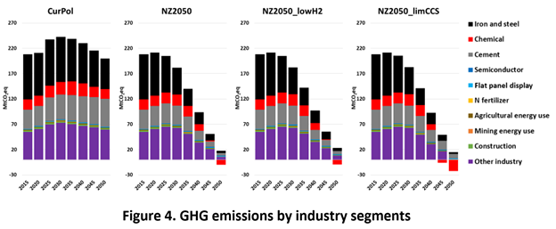

Daejeon, Korea - A new study led by researchers from the Korea Advanced Institute of Science and Technology (KAIST) has unveiled a comprehensive roadmap for achieving carbon neutrality in Korea’s industrial sector by 2050.
Published in the Journal of Cleaner Production, the research presents detailed decarbonization strategies for key industries such as steel, chemicals, and cement.

The international research team, headed by Prof. Jiyong Eom of KAIST’s Graduate School of Green Growth and Sustainability, utilized the Global Change Assessment Model (GCAM)[1] to analyze greenhouse gas reduction strategies across various industrial sectors. The study explored how these sectors could achieve carbon neutrality by utilizing novel technologies such as carbon capture and storage (CCS) [2] or clean hydrogen. This study is expected to play a crucial role in shaping Korea’s 2035 Nationally Determined Contribution (NDC) targets.
Lead author Hanju Lee emphasized the study’s unique contribution: “Our research is the first to model Korea’s detailed industrial segments, including the semiconductor industry, a key sector. This tailored approach will significantly contribute to establishing decarbonization strategies for Korea’s carbon-intensive industries such as iron and steel, chemicals, and cement.”
Key findings from the study include that the iron and steel, chemical, and cement sectors are projected to account for approximately 70% of the total industrial greenhouse gas reduction by 2050. Primary decarbonization methods include electrification of industrial processes, utilization of hydrogen and bioenergy, and the adoption of CCS technology. For example, the iron and steel industry could focus on hydrogen-based iron manufacturing, while the chemical industry could transition to biomass-based feedstocks. Additionally, the cement industry could lower its reliance on coal through a shift toward renewable energy and electricity-based production processes.
The study stresses that while CCS and clean hydrogen technologies are crucial for decarbonization, industries must be prepared with alternative strategies if these technologies face limitations. For instance, if hydrogen technology is constrained, the steel industry may need to rely more heavily on CCS.
“This research provides critical insights for setting Korea’s 2035 national reduction targets. It’s vital to present detailed strategies tailored to each industrial sector,” said the corresponding author Prof. Eom, “Achieving industrial decarbonization in Korea will require sector-specific technologies and policy support, including financial backing for carbon reduction technology development and commercialization, tax benefits, and streamlined permitting processes for low-carbon technology adoption.”
This research is expected to be a crucial milestone in achieving carbon neutrality in Korea’s industrial sector by 2050 and strengthening Korea’s leadership in global climate action through sector-specific strategies.
Read the paper here: https://doi.org/10.1016/j.jclepro.2024.143749
[1] GCAM: A global integrated assessment model that links energy systems, water, land, and climate to project the impact of various climate policies and decarbonization strategies.
[2] CCS technology: A process that captures carbon dioxide emissions from industrial operations or power plants and prevents their release into the atmosphere by storing them underground or utilizing them in other ways to reduce greenhouse gas emissions.
한국어 요약
카이스트 연구진, 2050년 탄소중립 목표 달성을 위한 한국 산업의 온실가스 배출량 감축경로 제시
- KAIST 연구진, 철강·반도체·화학 등 한국 주요 산업 탈탄소화 연구 발표
- 철강, 화학, 시멘트 부문 온실가스 감축, 전체 산업 감축 목표의 약 70% 기여
- 전기화, 수소 활용, CCS 기술이 핵심 전략으로 제시, 산업별 맞춤형 접근 필요성 강조
한국 산업 부문이 2050년까지 탄소중립 목표를 달성하기 위해 철강, 화학, 시멘트 등 주요 산업에서 구체적인 탈탄소화 경로를 제시한 연구가 국제 학술 저널 Journal of Cleaner Production에 발표되었다. KAIST 지속가능 녹색성장대학원 엄지용 교수가 이끄는 국제 연구팀이 발표한 이번 연구는, 향후 2035년 국가 온실가스 감축 목표(NDC) 수립에 중요한 역할을 할 것으로 기대된다.
연구진은 Global Change Assessment Model (GCAM)[1]을 사용하여 한국 산업 부문의 온실가스 감축 전략을 분석했다. 이 연구는 철강과 화학, 시멘트 부문을 중심으로 산업별 탄소 배출 특성을 분석하고, 탄소 포집 및 저장(CCS) 기술[2]과 청정에너지 기반의 수소 기술을 활용해 어떻게 각 부문이 탄소중립을 달성할 수 있을지를 구체적으로 탐색했다.
이번 연구의 제1저자인 이한주 씨는 “본 연구는 반도체 산업을 포함한 한국의 산업 세부 업종을 학계 최초로 상세하게 모델링한 것이 특징”이라며, “철강, 석유화학, 시멘트 등 탄소집약적 산업에 맞춤형 모델을 적용해 한국 산업 부문의 탈탄소화 전략 수립에 큰 기여를 할 것”이라고 말했다.
연구 결과에 따르면, 철강, 화학, 시멘트 부문이 2050년까지 전체 산업 부문 온실가스 감축의 약 70%를 차지할 것으로 예상된다. 주요 탈탄소화 방안으로는 산업 공정의 전기화, 수소 및 바이오에너지 활용, CCS 기술 도입 등이 제시되었다. 철강 산업은 수소 기반 철강 제조 기술을 중심으로, 화학 산업은 바이오매스 기반 원료 전환을 통해 배출을 줄일 수 있다. 또한, 시멘트 산업은 재생 에너지와 전력을 활용한 생산 방식 전환을 통해 석탄 의존도를 크게 낮출 수 있다.
특히 연구는 CCS 기술과 청정에너지 기반 수소 기술이 탈탄소화에 있어 핵심적인 역할을 하지만, 두 기술의 도입이 제한될 경우 산업별로 다른 대응 전략이 필요하다는 점을 지적했다. 예를 들어, 수소 기술의 도입이 제한될 경우 철강 산업은 CCS 기술에 더 크게 의존해야 하며, CCS 기술이 제한될 경우 화학 산업은 바이오매스 활용을 강화하게 된다.
이번 연구를 총괄한KAIST의 엄지용 교수는 “한국 산업의 탈탄소화를 위해서는 각 업종에 적합한 감축기술에 기반한 전략 수립이 필수적”이라고 강조했다. 또한, “CCS 및 수소생산 기술 등 산업부문 핵심 감축기술의 개발과 상용화를 위한 재정적 지원과 함께 보급을 가속화하기 위한 인프라 구축 및 세제 혜택이 중요하다”고 덧붙였다.
이번 연구는 한국 산업이 2050년 탄소중립을 달성하는 데 있어 중요한 이정표가 될 것이며, 각 산업 부문별 맞춤형 전략을 통해 한국이 국제 사회에서의 기후 대응 리더십을 강화할 수 있을 것으로 기대된다.
[1] GCAM은 에너지 시스템, 물, 토지 및 기후를 연결하는 글로벌 통합 평가 모델이다.
[2] CCS 기술은 산업 공정이나 발전소에서 발생하는 이산화탄소를 포집하여 대기로 방출되는 것을 막고, 포집한 이산화탄소를 저장하거나 활용하여 온실가스 배출을 줄이는 기술이다.